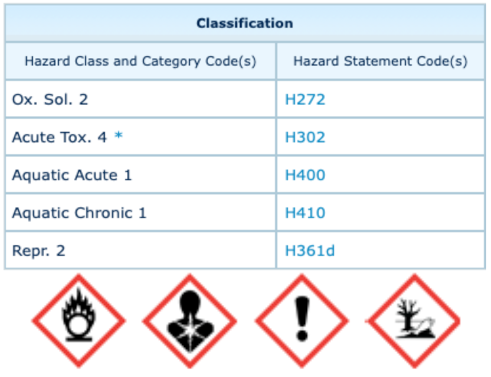

Tic tac, tic tac... Toujours être patient et s'assurer qu'une réaction est bien terminée !
Le glycérol et le permanganate de potassium sont deux composés physico-chimiques que l'on retrouve très fréquemment dans le monde de la chimie. • Le glycérol (ou 1,2,3-propanetriol) se présente le plus souvent sous la forme d'un liquide transparent,visqueux et incolore, il est non toxique pour l'homme. On peut l'obtenir par saponification de matières grasses ou lors de transestérification notamment lors de la production de biodiesel à partir d'huiles végètales, il y a libération de glycérol. Finalement, on retrouve le glycérol dans des médicaments, des cosmétiques, des produits alimentaires [3]. C'est dire si on peut en trouver facilement ! • Le permanganate de potassium (ou manganate de potassium VII), se présente sous forme de cristaux violets (à température et pression ambiantes) et il est très soluble dans l'eau. L'un de ses particularités est que le manganèse possède un degrès d'oxydation très élevé : +VII. C'est un très bon oxydant qui permet de créer des diols ou pour les solutions très concentrées d'obtenir des aldéhydes ou acides carboxyliques. On s'en sert très souvent lors de titrages en oxydo-réduction car la réduction de MnO-4 entraine un changement de couleur de la solution ce qui est très utile pour déterminer des volumes d'équivalence. Plus généralement, on s'en sert dans des produits d'entretien contre les moisissures, comme désinfectant [3].
|  | Aucun danger n'est associé à la manipulation de ce composé physico-chimique. |
Protocole
Pendant toute la durée de l'expérience se placer sous une hotte. Verser quelques gouttes de 1,2,3-propantriol (glycérol) dans un récipient contenant du permanganate de potassium préalablement écrasé (écraser le permanganate de potassium permet d'augmenter la surface de contact qui permet alors d'augmenter la réactivité de celui-ci).
Puis attendre jusqu'à observer une réaction, ne pas intervenir avant !
Observations
Pendant les trente premières secondes aucune observation n'est possible. Une fois ce temps écoulé une fumée blanche apparaît brusquement. Puis, le mélange prend feu avec des flammes de couleur bleuâtre. Une fois la réaction complètement terminée il reste des solides blancs et noirs.
Analyse
L'équation de la réaction étudiée est : 14 KMnO4 (s) + 4 C3H5(OH)3 (aq) --> 7 K2CO3 (s) + 7 Mn2O3 (s) + 5 CO2 (g) + 16 H2O(g)
Quelques données [5][6][7][8]: E°(KMnO4 (s)/MnO2 (s))=1,68V et E°(MnO2 (s)/Mn2O3 (s))=1,04V [4]. ΔfH°(KMnO4 (s))=-813,4 kJ.mol-1 ; ΔfH°(H2O(g))=-241,8 kJ.mol-1 ; ΔfH°(CO2 (g))=-393,5 kJ.mol-1 ; ΔfH°(K2CO3 (s))=-1151 kJ.mol-1 ; ΔfH°(Mn2O3 (s))=-959,0 kJ.mol-1 ; ΔfH°(C3H5(OH)3 (aq))= -772,7 kJ.mol-1 ΔfS°(KMnO4 (s))=171,1 J.mol-1.K-1 ; ΔfS°(H2O(g))=188,9 J.mol-1.K-1; ΔfS°(CO2 (g))=213,6 J.mol-1.K-1 ; ΔfS°(K2CO3 (s))=155,7 J.mol-1.K-1 ; ΔfH°(Mn2O3 (s))=110,6 J.mol-1.K-1 ; ΔfH°(C3H5(OH)3 (aq))=206,2 J.mol-1.K-1
Calcul de l'enthalpie standard de la réaction : ΔrH°(T=300K)=-14ΔfH°(KMnO4 (s))-4ΔfH°(C3H5(OH)3 (aq))+7ΔfH°(K2CO3 (s))+7ΔfH°(Mn2O3 (s))+5ΔfH°(CO2 (g))+16ΔfH°(H2O(g))=-6127 kJ.mol-1 . Calcul de l'entropie standard de la réaction : ΔrS°(T=300K)=-14ΔfS°(KMnO4 (s))-4ΔfS°(C3H5(OH)3 (aq))+7ΔfS°(K2CO3 (s))+7ΔfS°(Mn2O3 (s))+5ΔfS°(CO2 (g))+16ΔfS°(H2O(g))=-6127 J.mol-1.K-1 . Calcul de la constante de réaction :
La fumée correspond au dégagement d'eau sous forme gazeuse, dû à la chaleur générée par la réaction, et de dioxyde de carbone. Il y a alors toutes les conditions nécessaires pour qu'il y ait une combustion ! La source d'énergie provient de l'exothermicité de la réaction, le comburant correspond à l'oxygène naturellement présent dans l'air et les solides présents font office de combustible, notamment le permanganate de potassium qui est un produit inflammable.
Schéma du triangle du feu récapitulant les trois éléments nécessaires à une combustion [9].
L'énergie dégagée par la réaction permet des échanges d'électrons au sein des couches électroniques de certains éléments et notamment chez le potassium. Les électrons de ce dernier aborbent de l'énergie issue de la réaction exothermique, ils entrent alors dans un état excité mais instable. S'en suit une émission atomique spontanée lors du retour à l'état fondamental de ces électrons (état plus stable). Lors de cette émission atomique il y a un libération d'une énergie lumineuse à une longueur d'onde caractéristique d'où résulte la couleur violette (𝜆=404,7nm et 404,4nm) observable dans la flamme [10]. Ce sujet peut être approfondit en étudiant le test de flamme. Le composé K2CO3 constitue le produit solide blanc et Mn2O3 le produit solide noir.
On a donc à première vue une réaction de combustion spontanée relativement lente qui va progressivement augmenter à mesure que de l'énergie est produite par la réaction. Lorsqu'un certain seuil d'énergie est franchi, la conbustion a lieu.
Conclusion
Les composés manipulés sont dangereux ! En effet, le permanganate de potassium peut exploser par simple échauffement et est très nocif pour la faune aquatique. Le glycérol quant à lui est une substance très irritiante pour la peau et les yeux.
Bien que très lente au début et sans signe quelconque de dangerosité, la réaction prend vite une autre tournure due à sa forte exothermicité. S'il est peu habituel de rencontrer couramment des combustions sans source de chaleur extérieure, cette réaction en est un bon exemple ! Il est donc impératif d'avoir bonne connaissance des réactifs utilisés et de prévoir le caractère favorable et exothermique d'une réaction avant même de la mettre en application !
Pour limiter les risques, il est préférable d'utiliser du permanganate de potassium en solution aqueuse (notamment en solution aqueuse très diluée), il faut également toujours avoir à portée de soi de quoi éteindre des flammes ou plus précisément stopper la réaction ! Il faut finalement se renseigner sur les dangers potentiels liés à la manipulation de tels produits chimiques et bien lire tous les indications car si séparemment ces deux produits paraissent peu dangereux, leur mise en contact est mentionnée comme très dangereuse sur de nombreux sites.